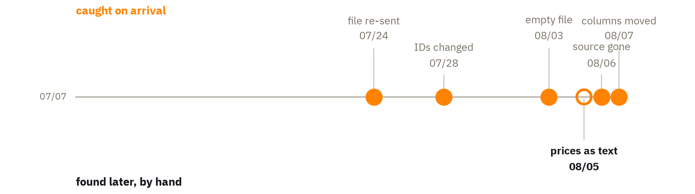
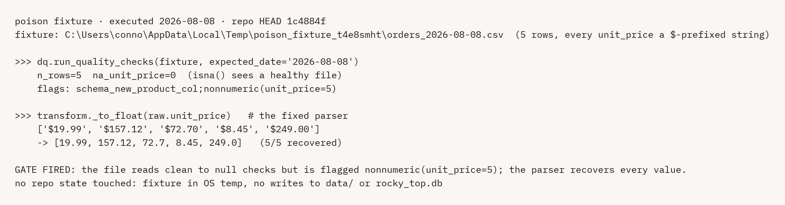
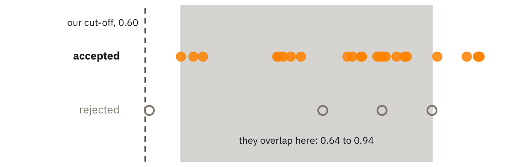
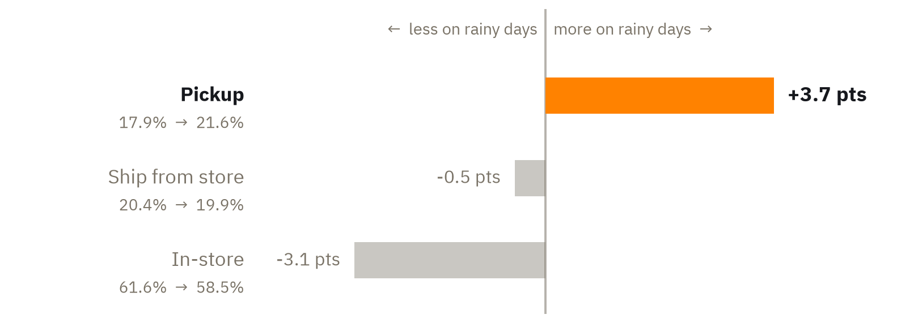
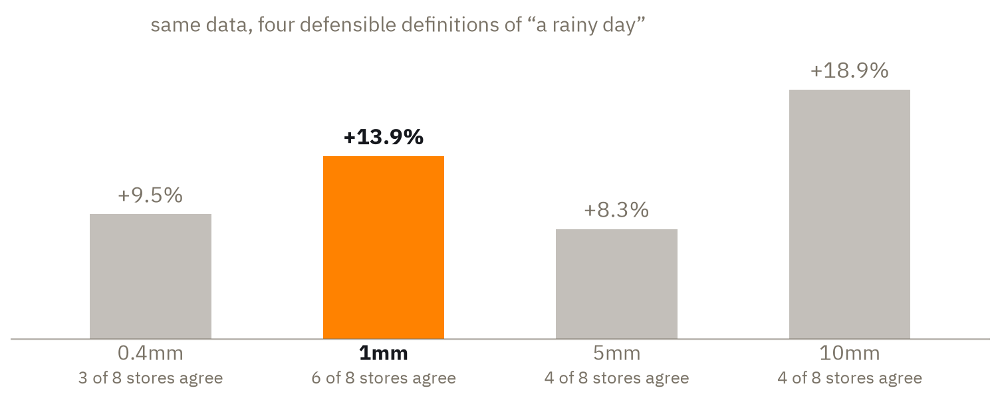
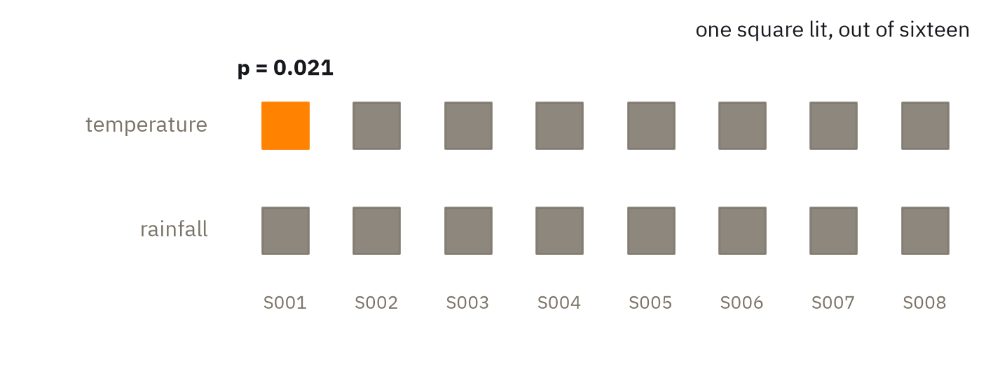

Does weather change what people buy at Rocky Top Outfitters — and can the pipeline that answers it be trusted?
5 caught on arrival. One got through. We found it and recovered every cent.

Everything that follows traces back to these two decisions.
| When | What went wrong | Caught by | What happened | |
|---|---|---|---|---|
| Jul 24 | Yesterday's file sent again | Arrival check | 140 duplicate rows set aside | |
| Jul 28 | Every product ID changed | Quality flag | Mapping rebuilt; nothing lost | |
| Aug 3 | File arrived empty | Arrival check | Logged empty; nothing invented | |
| Aug 5 | Prices arrived as text | Nothing — found in audit | $56,970.09 recovered | |
| Aug 6 | Source vanished | Arrival check | Logged failed; clean the next day | |
| Aug 7 | Columns shuffled | Design absorbed it | Zero impact |
Three separate checks passed it. The preserved original is why recovery took minutes.
A fix you haven't tested is a claim, not a fix.


Weather varies by store and day, not by product category.
5 store-days changed after we locked our numbers. Two crossed our rain line.



Reallocation, not spend. It needs no claim about total demand.
Including the $57K that briefly read as zero.
| Component | Score | Weight | Contribution |
|---|---|---|---|
| Name similarity | 0.50 | 0.6 | 0.300 |
| Subcategory | 1.00 | 0.2 | 0.200 |
| Price closeness | 0.841 | 0.2 | 0.168 |
| Combined | 0.668 — clears 0.60 by 0.068 |
| Rain cut-off | Median revenue lift, and how many stores agree |
|---|---|
| 0.4 mm | +9.5% (3 of 8 stores) |
| 1 mm | +13.9% (6 of 8 stores) |
| 5 mm | +8.3% (4 of 8 stores) |
| 10 mm | +18.9% (4 of 8 stores) |
| Figure | On these slides (locked) | On today's data |
|---|---|---|
| Pickup shift | +3.7 points | +3.4 points (z = 2.59, p = 0.009) |
| Rainy days at S007 | S007: 12/29 rainy days locked, 11/29 today | |
| Rainy days at S008 | S008: 5/29 rainy days locked, 6/29 today | |
| Revisions by the archive | 5 store-days — S007 08-07 2.3mm to 0.9mm (rain to dry); S008 08-07 0.4mm to 3.7mm (dry to rain) | |